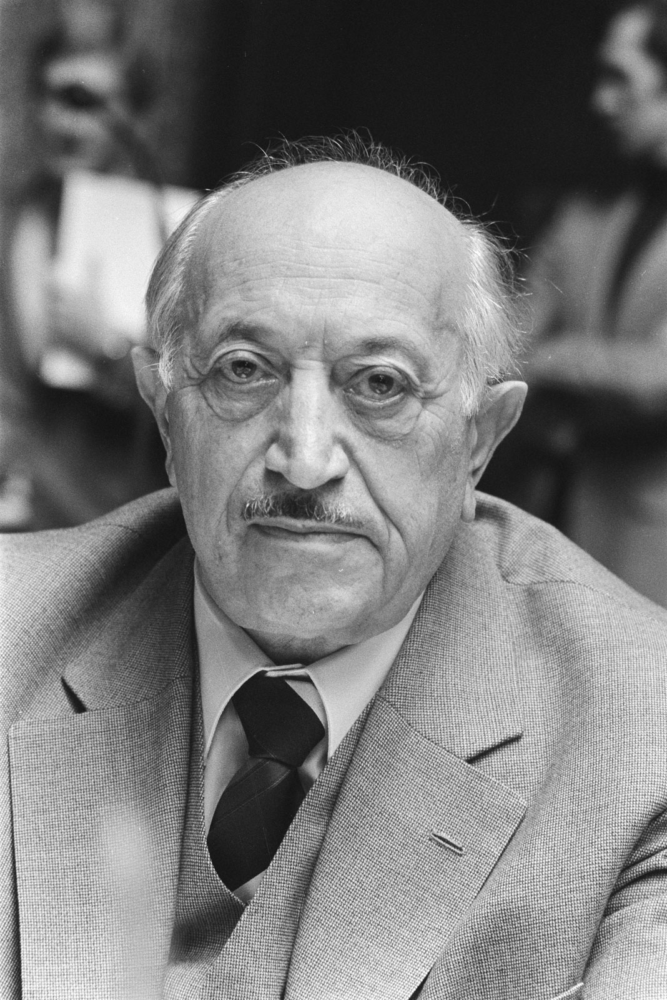

Nazi hunters
By the end of WW2,many Nazis were involved in the genocide of 6 million Jews and other people. Some of those Nazis managed to escape their judgement by moving to another country with a fake name and ID. Popular destinations the Nazis escaped to included countries like Argentina, Australia, Norway etc. They were hunted down by people called The Nazi Hunters who dedicated their life to search for the Nazis so they could face justice. Many of the Nazi Hunters had their family and friends tortured and killed by the Nazis and they swore the Nazis will not get away with it. A famous Nazi Hunter named Simon Wiesenthal barely survived the holocaust while 89 of his family members were murdered, he made it his life quest to find the Nazis responsible for the deaths. Simon Wiesenthal quoted “When history looks back I want people to know the Nazis weren't able to kill millions of people and get away with it”. For decades the Nazi Hunters pursued the Nazis and bought them to trial, many of the higher ranking Nazis were bought to trial at the famous Nuremberg trials.
Declaration of human rights
In 1946-1948, the declaration of human rights was created in response to the Holocaust and WW2. The Universal Declaration of Human Rights (UDHR) is a document many people contributed to, declaring human rights and that no one can strip them from you. There are 30 main articles on human rights (I have simplified them for easy understanding) and these include:
-
All People Are Free & Equal.
We are all free and should be treated in the same way.
-
Don’t Discriminate.
Everyone is entitled to these rights no matter what race, colour, sex, language, religion, or any other status.
-
The Right to Life.
Everyone has life rights, freedom and protection.
-
No Slavery.
Slavery is forbidden and nobody has the right to enslave us. We also don’t have to right to enslave.
-
No Torture.
Torture is outlawed and no one has the right to torture or treat inhuman.
-
You Have Rights No Matter Where You Go.
Everyone has the right to be recognised everywhere as a person before the law.
-
We’re All Equal Before the Law.
We have the right in fair treatment before the law The law is the same for everyone.
-
We Are Protected by Law.
We are protected by the law and have the right to get law help if treated unfairly
-
No Unfair Detainment.
No one can put us in jail for no reason or send us away from our country.
-
The Right to Trial.
You have the right to have a fair trial in public. No one should be able to tell the judge what to do.
-
We’re Innocent untill Proven Guilty.
We are innocent until proven we are guilty and should be blamed without proof. We have the right for proof.
-
The Right to Privacy.
No one should harm our reputation. No one can enter our home, access personal objects, or disturb us or our family without a valid reason.
-
Freedom to Move.
We can travel where we want in our country (lol we cant tho in lockdown)
-
The Right to Seek Safety.
We have the right to move away to another place/country to be safe from mistreatment.
-
Right to a Nationality.
We have the right to belong to a nation.
-
Marriage and Family.
Adults have the right to marry and have children if they desire.
-
The Right to Your Possessions
Everyone has the right to their own possessions or share them. No one can take our belongings without a valid reason.
-
Free Thought.
We all have the right to freedom of belief and religion.
-
Freedom of Expression.
We have the right to our own opinion and to share our opinion.
-
The Right to Public Assembly.
We all have the right to associate with our friends or with a group.
-
The Right to Democracy.
Every one has the right to participate in the government of our country and all adults should be permitted to elect their own leaders.
-
Social Security.
We all have the right to the basic human needs, housing, enough money to live on, medicine, education etc.
-
Workers’ Rights.
All adults has the right to work, with a fair pay.
-
The Right to Relax.
We have the right to relax from work.
-
Right of social service
We all have the right to a healthy life. All people have the right to be cared for.
-
The Right to Education.
We have the right to learn and be educated.
-
Copyright.
People have the right to protect their own work they are the author of and others cannot reproduce a copy without permission. We all have to right to live how we want and enjoy the good things art, science and learning bring.
-
A Fair and Free World.
The DOHR should apply everywhere in the world so we ca enjoy our rights and freedoms all over the world.
-
Submissive to Law.
Everyone is obedient to the laws and rights that the DOHR specifies.
-
Nobody Can Remove Your Rights.
No one at all can remove your rights as a human from you.